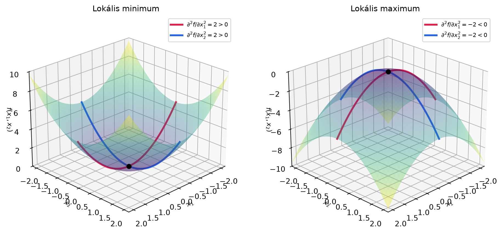
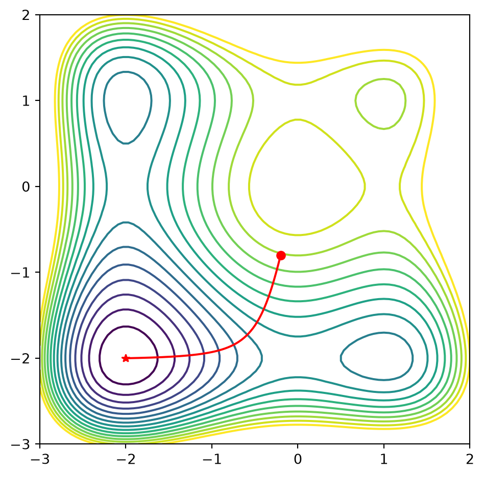
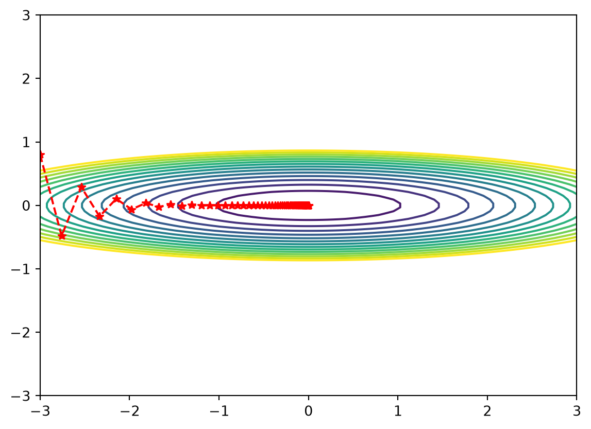
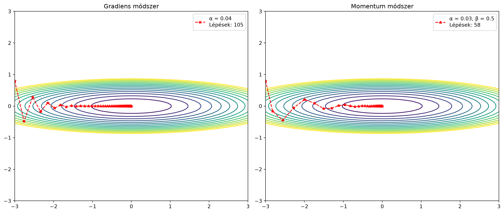
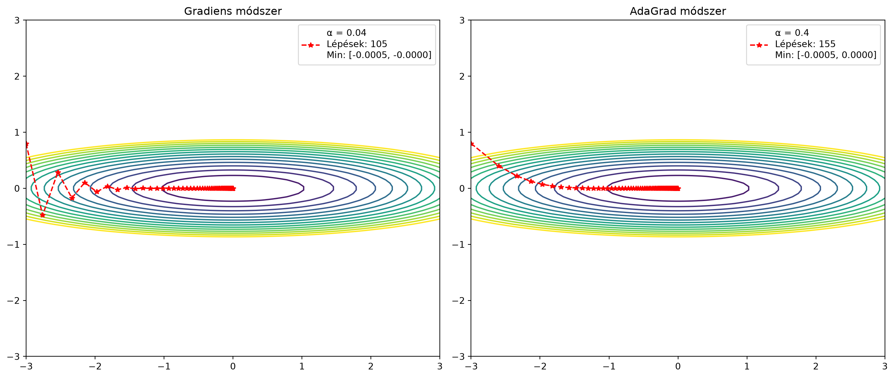
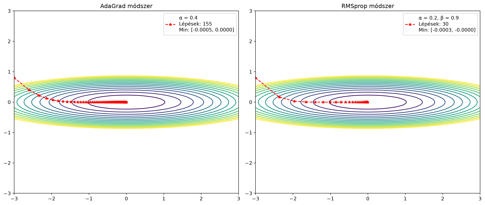
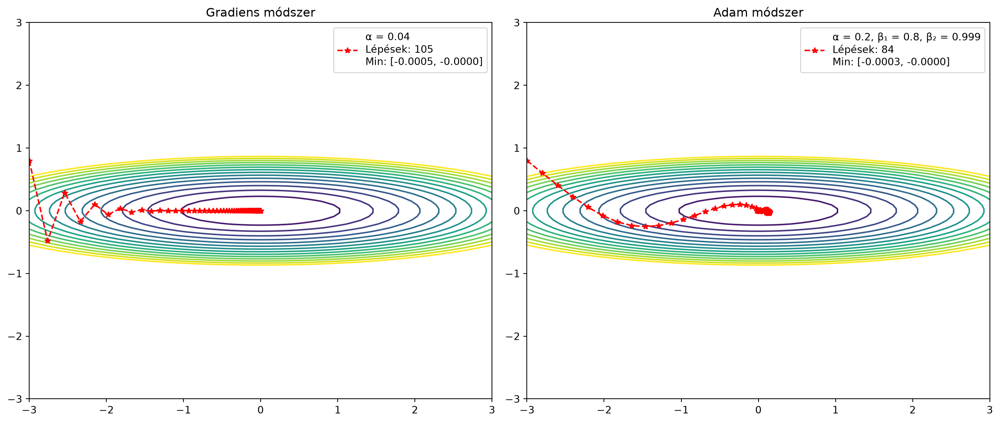
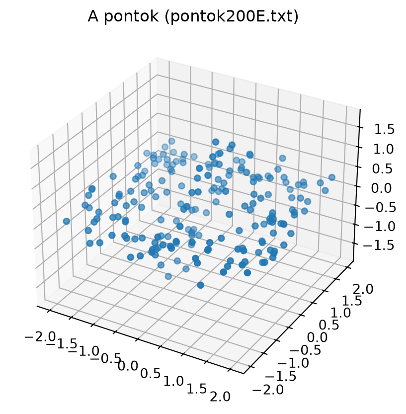
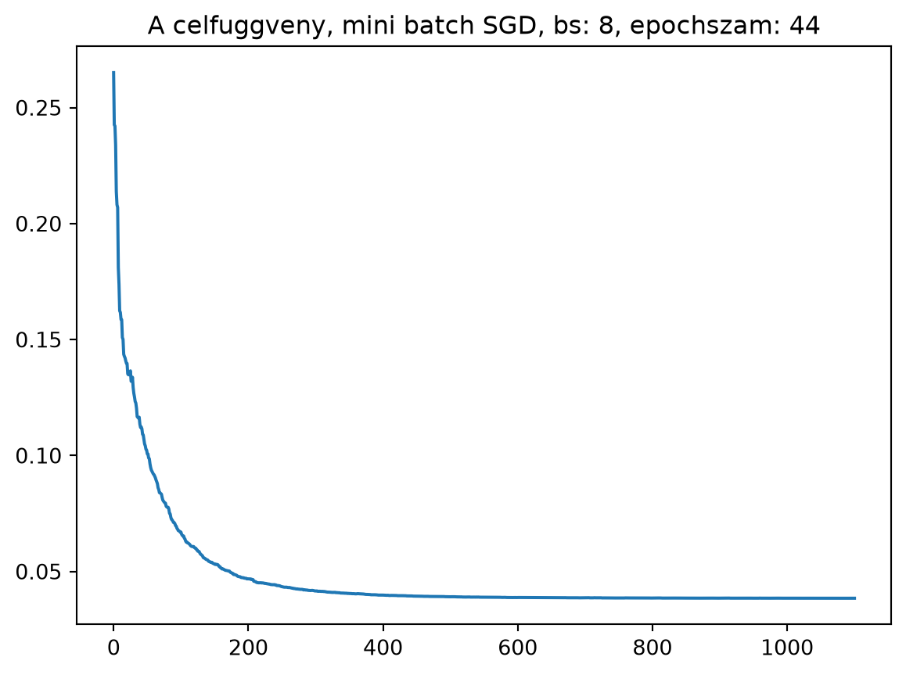
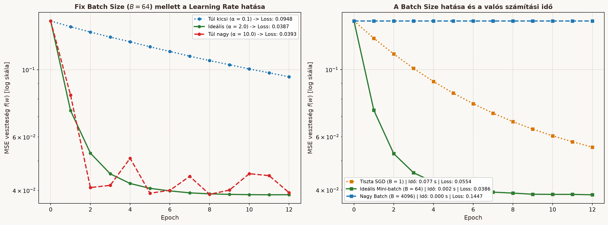

Haladó optimalizációs módszerek
Bevezetés
Szélsőértékek és deriváltak
\(f'(x_0)\): a \(x_0\)-beli érintő meredeksége.
NoteMonotonitás
Ha \(f'(x_0) > 0\), akkor a függvény szigorúan monoton növekvő \(x_0\)-ban.
Ha \(f'(x_0) < 0\), akkor a függvény szigorúan monoton csökkenő \(x_0\)-ban.
Ha \(x_0\) lokális szélsőérték, akkor \(f'(x_0) = 0\), viszont ez fordítva nem igaz.
NoteKonvexitás és szélsőértékek
Ha az \(f : \mathbb{R} \rightarrow \mathbb{R}\) kétszer differenciálható és \(f'(x_0) = 0\), azaz stacionárius pont, akkor:
- \(f''(x_0) > 0\): a függvény \(x_0\) pontban konvex, azaz lokális minimumot vesz fel.
- \(f''(x_0) < 0\): a függvény \(x_0\) pontban konkáv, azaz lokális maximumot vesz fel.
Minimumhely közelítése
NoteGradiens módszer
Egy \(x_0\) pontból indulva, \(k = 1, 2, 3, \ldots\) esetén
\[x_{k+1} = x_k - \alpha f'(x_k)\]
, ahol \(a > 0\) a lépéshossz (tanulási paraméter, learning rate).
CautionMagyarul
Úgy keressük meg a minimumhelyet, hogy lederiváljuk az aktuális pontban a függvényt, majd abba az irányba megyünk valamennyit.
Például: \(x^2\) függvény esetén a minimumhely \(x = 0\), és ha \(x_0 = 1\)-ből indulunk, akkor a derivált \(f'(1) = 2\), vagyis pozitív irányba megyünk. Ha a lépéshossz \(\alpha = 0.1\), akkor \(x_1 = 1 - 0.1 \cdot 2 = 0.8\) lesz az új pont, majd onnan folytatjuk a keresést.
A lépéshossz hatása
Tekintsük az \(f(x) = \frac{x^4}{4} + \frac{x^3}{3} - x^2 + 1\) függvényt a \([-3, 2]\) intervallumon, ahol \(x_0 = -2.4\)-ből indulunk.
TipLeállási feltétel és stabilitás
- Miért \(|f'(x_k)| < 10^{-3}\) esetén állunk le? Lokális szélsőértékben a derivált nulla. Mivel a lépésekkel egyre lassabban haladunk, véges gépi pontossággal ritkán érünk el pontosan \(0\)-t. Ha \(|f'(x_k)| < 10^{-3}\), a felület már lapos, a minimum közvetlen környezetében vagyunk, a további lépések feleslegesek.
- Oszcilláció: Túl nagy lépéshossz esetén átugorjuk a völgy alját, és a szemközti falon kötünk ki. A pont ide-oda kezd pattogni a völgy két oldala között.
- Gradiens kilövés: Ha a lépéshossz nagyon nagy, minden ugrás után még meredekebb szakaszra érkezünk, így a lépések exponenciálisan nőnek, és a gradiens pillanatok alatt a végtelenbe lő ki.
A 3 tipikus viselkedés \(x_0 = -2.4\)-ből indítva:
- \(\alpha = 0.1\) (Konvergens): Stabilan és gyorsan bekonvergál a globális minimumba.
- \(\alpha = 0.5\) (Oszcilláció): Átugorja a minimumot, és a két fal között pattog ide-oda.
- \(\alpha = 1.2\) (Kilövés): Azonnal kiszabadul a tartományból, a gradiens kilő a végtelenbe.
Lépéshossz választási módszerek
TipKonstans lépéshossz
Az iterációszám függvényében csökkenő lépéshossz, például:
- \(\alpha_k = \alpha_0 \cdot c^{k}\), ahol \(c < 1\)
- \(\alpha_k = \alpha_0e^{-c \cdot k}\)
- \(\alpha_k = \frac{\alpha_0}{1 + c \cdot k}\)
Itt a \(c\) egy pozitív konstans, amely a csökkenés mértékét szabályozza. Minél nagyobb \(c\), annál gyorsabban csökken a lépéshossz, így a gradiens módszer stabilabb lesz, de lassabban konvergál.
TipDinamikus lépéshossz
A célfüggvény értékétől függően, adaptívan változó lépéshossz, például:
\(\alpha_{k+1} = \alpha_k \cdot 1.05\), ha \(f(x_{k+1}) < f(x_k)\), míg romló függvényérték esetén újraszámoljuk a lépéshosszt, például \(\alpha_{k+1} = \frac{\alpha_k}{2}\). Vagyis ha a függvényérték csökken, növeljük a lépéshosszt, ha nő, csökkentjük.
ImportantCélfüggvény
A célfüggvény az a függvény amelynek a minimumát keressük. Mesterséges intelligencia alkalmazásokban a célfüggvény gyakran a veszteségfüggvény (loss function), amely a modell teljesítményét méri. A gradiens módszer célja, hogy a célfüggvény értékét minimalizálja az iterációk során.
Többváltozós függvények
Gradiens vektor és Hesse-mátrix
TipTöbbváltozós függvény
Olyan függvény, amelynek több bemeneti változója van, például:
\(f(x, y) = x^2 + y^2\) egy kétváltozós függvény, ahol a bemeneti változók \(x\) és \(y\). Kétváltozós függvény egy felületet ír le a háromdimenziós térben, ahol a függvényérték a \(z\) tengelyen jelenik meg.
NoteGradiens vektor
Az \(f: \mathbb{R}^n \rightarrow \mathbb{R}\) függvény esetén minimumhelyet keresve a gradiens vektorral az irányt határozzuk meg, amelyben a függvény leggyorsabban nő. A gradiens vektor komponensei a függvény parciális deriváltjai az egyes változók szerint:
\[\nabla f(x) = \left[\begin{array}{ccc} \frac{\partial f}{\partial x_1}(x) \\ \vdots \\ \frac{\partial f}{\partial x_n}(x) \end{array}\right] \]
CautionPélda a gradiens vektorra
Legyen az \(f(x, y) = x^2 + y^2\) függvény. A gradienst úgy számoljuk ki, hogy a függvényt lederiváljuk egyszer az \(x\) és egyszer a \(y\) változó szerint. Ilyenkor a másik változót konstansnak tekintjük:
\[\frac{\partial f}{\partial x} = 2x + 0 = 2x\]
\[\frac{\partial f}{\partial y} = 0 + 2y = 2y\]
Ilyenkor a gradiens vektor: \(\nabla f(x, y) = \left[\begin{array}{c} 2x \\ 2y \end{array}\right]\)
Tehát a felületen \((1, 1)\) pontban a gradiens vektor: \(\nabla f(1, 1) = \left[\begin{array}{c} 2 \\ 2 \end{array}\right]\), ami az \((1, 1)\) pontból a \((2, 2)\) irányába mutat. Ez azt jelenti, hogy a függvény leggyorsabban ebbe az irányba nő.
NoteHesse-mátrix
A Hesse-mátrix a függvény második deriváltjainak mátrixa, amely a függvény görbületét írja le. Egyváltozósan ez egyszerűen a második derivált, többváltozós függvény esetén a Hesse-mátrix a parciális második deriváltakból áll:
\[\nabla^2f(x) = \left(\frac{\partial^2 f}{\partial x_i \partial x_j}(x)\right)_{i,j} \in \mathbb{R}^{n \times n}\]
CautionPélda a Hesse-mátrixra
Legyen az \(f(x, y) = x^2 + y^2\) függvény. Ilyenkor a Hesse-mátrix egy 2x2-es mátrix, amelynek elemei a függvény második parciális deriváltjai: \[ \nabla^2f(x, y) = \begin{pmatrix} \frac{\partial^2 f}{\partial x^2}(x, y) & \frac{\partial^2 f}{\partial x \partial y}(x, y) \\ \frac{\partial^2 f}{\partial y \partial x}(x, y) & \frac{\partial^2 f}{\partial y^2}(x, y) \end{pmatrix} \]
Elsődrendű deriváltak:
- \(\frac{\partial f}{\partial x} = 2x\)
- \(\frac{\partial f}{\partial y} = 2y\)
Másodrendű deriváltak:
- \(\frac{\partial^2 f}{\partial x^2} = 2\) - Vagyis kétszer az \(x\) szerinti deriváltja.
- \(\frac{\partial^2 f}{\partial y^2} = 2\) - Vagyis kétszer az \(y\) szerinti deriváltja.
- \(\frac{\partial^2 f}{\partial x \partial y} = 0\) - Először az \(x\) szerinti deriváltat vesszük, majd a \(y\) szerinti deriváltat, ami nulla, mivel nincs \(y\)-t tartalmazó tag az első deriváltban.
- \(\frac{\partial^2 f}{\partial y \partial x} = 0\) - Hasonlóan, először az \(y\) szerinti deriváltat vesszük, majd az \(x\) szerinti deriváltat, ami szintén nulla.
Így a végleges Hesse-mátrix: \[ \nabla^2f(x, y) = \begin{pmatrix} 2 & 0 \\ 0 & 2 \end{pmatrix} \]
TipGradiens használata többváltozós függvényeknél
Minimalizálásnál negatív gradiens vektor irányba lépünk, mivel a gradiens a legmeredekebb növekedés irányát mutatja. Negatív gradiens mező így néz ki a \(f(x) = \frac{x_1^4}{4} + \frac{x_2^4}{4} + \frac{x_1^3}{3} + \frac{x_2^3}{3} - x_1^2 - x_2^2 + 2 \space\) függvény esetén.

Lokális szélsőérték feltételek
NoteElsőrendű szükséges feltétel
Ha \(x^*\) egy lokális szélsőérték, és a \(f\) függvény folytonosan differenciálható az \(x^*\) nyílt környezetében (vagyis a \(f\) függvény deriváltja létezik az \(x^*\) pontban), akkor a \(\nabla f(x^*) = 0\).
NoteStacionárius pont
Ha \(\nabla f(x^*) = 0\), akkor az \(x^*\) pontot stacionárius pontnak nevezzük. A stacionárius pont lehet lokális minimum, lokális maximum vagy nyeregpont, amely se nem minimum, se nem maximum.
TipPélda nyeregpontra
Az alábbi ábrán a \(f(x_1, x_2) = x_1^2 - x_2^2\) függvény stacionárius pontja a \((0, 0)\) pont, amely egy nyeregpont. A gradiens vektorok a stacionárius pontban nullvektorok, azaz \(\nabla f(0, 0) = (0, 0)\).

Kvadratikus függvény és Taylor-approximáció
NoteKvadratikus függvény
Az \(f: \mathbb{R}^n \to \mathbb{R}\) függvényt kvadratikus függvénynek nevezzük, ha:
\[f(x) = \frac{1}{2} x^T A x + b^T x + c\]
alakba írható, ahol \(A \in \mathbb{R}^{n \times n}\) egy szimmetrikus mátrix, \(b \in \mathbb{R}^n\) egy vektor, és \(c \in \mathbb{R}\) egy skalár.
CautionPélda kvadratikus függvényre
Legyen az
\[f(x_1, x_2) = x_1^2 + 2x_2^2 + 2x_1 x_2 - 4x_1 + 6x_2 + 5\]
Ekkor \(x = \begin{pmatrix} x_1 \\ x_2 \end{pmatrix}\), és a mátrixos alak:
\[f(x) = \frac{1}{2} \begin{pmatrix} x_1 & x_2 \end{pmatrix} \begin{pmatrix} 2 & 2 \\ 2 & 4 \end{pmatrix} \begin{pmatrix} x_1 \\ x_2 \end{pmatrix} + \begin{pmatrix} -4 & 6 \end{pmatrix} \begin{pmatrix} x_1 \\ x_2 \end{pmatrix} + 5\]
Ahol az együtthatók:
- \(A = \begin{pmatrix} 2 & 2 \\ 2 & 4 \end{pmatrix}\) (szimmetrikus mátrix, a főátlón kívüli elemek összege adja a vegyes tagot: \(\frac{1}{2}(2 + 2) = 2\))
- \(b = \begin{pmatrix} -4 \\ 6 \end{pmatrix}\) (lineáris tagok együtthatói)
- \(c = 5\) (konstans tag)
TipKvadratikus függvény gradiens és Hesse-mátrix
Ilyenkor a gradiens és a Hesse-mátrix a következőképpen alakul:
\[\nabla f(x) = A x + b \qquad \nabla^2 f(x) = A\]
Ez azért jó, mert nem kell minden iterációban újra számolni a Hesse-mátrixot, mivel az állandó, a gradiens pedig lineárisan függ a változóktól, és ez kevésbé számításigényes, mint egy általános függvény esetén.
NoteTaylor-approximáció
Legyen \(f: \mathbb{R}^n \to \mathbb{R}\) egy elegendően sokszor differenciálható függvény, ilyenkor:
\[f(x_0 + \delta x) \approx f(x_0) + \nabla f(x_0)^T \cdot \delta x \]
illetve
\[f(x_0 + \delta x) \approx f(x_0) + \nabla f(x_0)^T \cdot \delta x + \frac{1}{2} \delta x^T \nabla^2 f(x_0) \cdot \delta x\]
CautionMagyarul
Az első egyenlet a lineáris Taylor-approximáció: az \(x_0\) pontbeli érintősíkkal közelíti a felületet. A \(\delta x\) a tetszőleges irányú elmozdulás, és a gradiensvektorral vett skaláris szorzata (\(\nabla f(x_0)^T \delta x\)) adja meg, hogy a meredekség alapján mennyit változik a függvényérték. Pontosan ugyanaz, mint egyváltozós esetben a gradiens módszer, csak itt több dimenzióban dolgozunk.
A második egyenlet a kvadratikus Taylor-approximáció: a sík helyett már egy másodrendű paraboloid felületet illeszt a pontra. Nemcsak a meredekséget, hanem a felület görbületét is figyelembe veszi a Hesse-mátrix (\(\nabla^2 f(x_0)\)) segítségével, így sokkal pontosabb képet ad a függvény alakjáról egy völgyben vagy nyeregben.
NoteStacionárius pont és Hesse-mátrix
Ha \(x_0\) stacionárius pont (\(\nabla f(x_0) = 0\)), akkor
\[f(x_0 + \delta x) \approx f(x_0) + \frac{1}{2} \delta x^T \nabla^2 f(x_0) \cdot \delta x\]
vagyis a Hesse-mátrix adhatja meg, hogy a stacionárius pont lokális minimum, maximum vagy nyeregpont. A Hesse-mátrix sajátértékei alapján dönthetünk:
- ha \(x^T \cdot \nabla^2f(x_0) \cdot x > 0\), akkor a stacionárius pont lokális minimum (a Hesse-mátrix pozitív definit, minden sajátértéke pozitív)
- ha \(x^T \cdot \nabla^2f(x_0) \cdot x < 0\), akkor a stacionárius pont lokális maximum (a Hesse-mátrix negatív definit, minden sajátértéke negatív)

Lineáris regresszió és a kvadratikus függvény
NoteLineáris regresszió
Adottak az \((x^{(i)}, y^{(i)} )\) adatok, ahol:
- \(x^{(i)} = [x_1^{(i)}, \ldots, x_d^{(i)}] \in \mathbb{R}^d\) jellemzővektorok (sorvektorok),
- \(y^{(i)} \in \mathbb{R}\) a célváltozók.
Olyan \(w_1, \ldots, w_d \in \mathbb{R}\) súlyokat keresünk, melyekkel:
\[y^{(i)} \approx w_1 x_1^{(i)} + \cdots + w_d x_d^{(i)} = x^{(i)} \cdot w\]
ahol \(w\) a súlyok oszlopvektora. A súlyokat az
\[f(w) = \frac{1}{2}\sum_{i=1}^n (x^{(i)}w - y^{(i)})^2 = \frac{1}{2}\|Xw - y\|_{2}^2\]
függvény minimlizálásával találjuk meg, ahol \(X\) a jellemzők mátrixa, \(y\) pedig a célváltozók vektora.
CautionMagyarázat
Az \(x^{(i)}w\) kifejezéssel a modelünk által becsült értéket kapjuk az \(y^{(i)}\) értékhez. A \((x^{(i)}w - y^{(i)})^2\) kifejezés a becsült és a tényleges érték közötti négyzetes hibát adja meg. A \(\frac{1}{2}\|Xw - y\|_{2}^2\) kifejezés a hibát összegzi az összes adatponton.
\[\|a\|_{2} = \sqrt{a_1^2 + \cdots + a_n^2}\]
NoteKvadratikus függvény a lineáris regresszióban
\[f(w) = \frac{1}{2}\|Xw - y\|_{2}^2 = \frac{1}{2}(Xw - y)^T (Xw - y) = \] \[= \frac{1}{2}w^T X^T X w - w^T X^T y + \frac{1}{2}y^T y\]
ami egy kvadratikus függvény. Ha \(X\) oszlopai lineárisan függetlenek, akkor a Hesse-mátrix \(X^TX\) pozitív definit, így a függvény konvex, és egyértelmű minimuma van.
A \(\nabla f(w) = 0\) feltételből a Gauss-féle normálegyenletet kapjuk: \[X^T X w = X^T y\]
Ha \(X\) oszlopai nem függetlenek, akkor a minimumhely nem egyértelmű.
CautionMagyarázat
\((Xw-y)^T (Xw-y)\) kifejezés azért egyenértékű a \(\|Xw - y\|_{2}^2\) kifejezéssel, mert a vektorok négyzetes normája megegyezik a vektor transzponáltjával vett skaláris szorzattal: \[\|a\|_2^2 = a^T a\]
Pl. ha \(a = \begin{pmatrix} a_1 \\ a_2 \\ a_3 \end{pmatrix}\), akkor: \[\|a\|_2^2 = a_1^2 + a_2^2 + a_3^2 = \begin{pmatrix} a_1 & a_2 & a_3 \end{pmatrix} \begin{pmatrix} a_1 \\ a_2 \\ a_3 \end{pmatrix} = a^T a\]
Innen úgy kapjuk a kvadratikus alakot, hogy kifejtjük a \((Xw - y)^T (Xw - y)\) szorzatot: \[(Xw - y)^T (Xw - y) = (Xw)^T (Xw) - (Xw)^T y - y^T (Xw) + y^T y =\] \[= w^T X^T X w - 2 w^T X^T y + y^T y\]
Ha figyeljük a kvadratikus függvény általános alakját (\(\frac{1}{2} w^T A w + b^T w + c\)), akkor láthatjuk, hogy:
- \(A = X^T X\) (szimmetrikus mátrix)
- \(b = -X^T y\) (lineáris tag)
- \(c = \frac{1}{2}y^T y\) (állandó tag)
Ha lederiváljuk a kvadratikus függvényt, akkor a gradiens: \[\nabla f(w) = X^T X w - X^T y\]
Ha a gradiens nullvektor, akkor a Gauss-féle normálegyenletet kapjuk: \[X^T X w = X^T y\]
ami azt jelenti, hogy a lineáris regresszió optimális súlyait a normálegyenlet megoldásával találjuk meg.
Gradiens módszer
NoteGradiens
Az \(f: \mathbb{R}^n \to \mathbb{R}\) minimumhelyét keressük. Ehhez egy közelítősorozatot definiálunk.
\(x_0\)-ból \((x_0 + \alpha \cdot p)\)-be lépünk, ahol \(p\) a lépés iránya, \(\alpha\) pedig a lépéshossz.
\[f(x_0 + \alpha p) \approx f(x_0) + \alpha \nabla f(x_0)^T \cdot p\]
Ha \(\nabla f(x_0)^T \cdot p < 0\), akkor a függvény csökken.
\(p = -\nabla f(x_0)\) az \(x_0\)-beli legmeredekebb csökkenés iránya
\(p = \nabla f(x_0)\) az \(x_0\)-beli legmeredekebb emelkedés iránya
TipGradiens módszer
\(x_0\) kezdővektor, \(\alpha > 0\),
\[x_{k+1} = x_k - \alpha \nabla f(x_k)\] Ilyenkor az \(x_k\) sorozat közelít a minimumhoz, mivel a negatív gradiens irányba lépünk.
Fontos a jó lépésköz kiválasztása, mert ha túl nagy, akkor a minimumtól távolodhatunk, ha túl kicsi, akkor lassan konvergálunk.
Választási módszerek: iterációszám függvényében csökkenő, célfüggvény értékének megfelelően csökkenő, vagy iránymenti keresés (vagyis az \(\alpha\)-t úgy választjuk, hogy \(- \nabla f(x_k)\) irányban az optimális lépést találjuk).
CautionKétváltozós függvényeknél a gradiens módszer
Az \(\frac{x^4}{4} + \frac{x^3}{3} - x^2 + 1 + \frac{y^4}{4} + \frac{y^3}{3} - y^2 + 1\) függvény és a gradiensének definiálása:
\(\nabla f(x, y) = \begin{pmatrix} x^3 + x^2 - 2x \\ y^3 + y^2 - 2y \end{pmatrix}\)
import numpy as np
def fv(x, y):
return (x**4 / 4 + x**3 / 3 - x**2) + 1 + y**4 / 4 + y**3 / 3 - y**2 + 1
def fvgrad(x, y):
return np.array([(x**3 + x**2 - 2 * x), y**3 + y**2 - 2 * y])
fv1 = lambda x: fv(x[0], x[1]) # Átdobja egyváltozós függvénybe, hogy a gradiens módszerhez használható legyen
g1 = lambda x: fvgrad(x[0], x[1]) # Same here, meg lehet csinálni már a függvényt egyváltozósként is x[:, 0], x[:, 1] vektorokkal.A gradiens módszer implementációja:
# input:
# fun: a celfuggveny
# fund: a celfuggveny gradiense
# x0: kezdovektor
# alfa: lepeshossz
# n: maximalis lepesszam
# tol: tolerancia a leallasi feltetelhez
# output:
# pontok: a bejart pontok
# fval: a fuggveny erteke a bejart pontokban
# k: az elvegzett lepesek szama
def gradm(fun, fund, x0, alfa, n, tol):
pontok = np.zeros((n + 1, len(x0))) # n + 1 sor, len(x0) oszlop
fval = np.zeros(n + 1) # n + 1 sor, 1 oszlop
pontok[0] = x0
fval[0] = fun(x0)
k = 0
grad = fund(pontok[0])
while k < n and np.linalg.norm(grad) >= tol: # Feltétel: a lépésszám kisebb, mint a maximum, és a gradiens normája nagyobb, mint a tolerancia (sqrt(x**2 + y**2 + ...) < tol nál megáll)
pontok[k + 1] = pontok[k] - alfa * grad # A következő pont a jelenlegi pont mínusz a gradiens irányába lépve, a lépéshosszal szorozva
fval[k + 1] = fun(pontok[k + 1]) # A függvény értéke a következő pontban
k += 1
grad = fund(pontok[k])
return pontok[:k + 1], fval[:k + 1], k # Csak a bejárt pontokat adjuk vissza, sima tömbös módszernél nem kell ilyen csak idk hogy kell használni a numpyt xdKirajzolás:
import matplotlib.pyplot as plt
p, f, m = gradm(fv1, g1, np.array([-0.2, -0.8]), 0.01, 400, 1e-3) # Megadjuk a kezdőpontot, lépéshosszt, maximális iterációt és toleranciát
xx = np.linspace(-3, 3, 100)
yy = xx.copy() # -3 és 3 között 100 pontot generálunk mindkét tengelyre
xmatrix, ymatrix = np.meshgrid(xx, yy) # Létrehozunk egy hálót a két tengely mentén
zmatrix = fv(xmatrix, ymatrix) # A függvény értékeit kiszámítjuk a háló minden pontjára
plt.contour(xmatrix, ymatrix, zmatrix, levels=np.linspace(-3, 3, 15)) # Kontúrokat rajzolunk a függvény értékei alapján, 15 szinttel -3 és 3 között
plt.axis("equal") # Az x és y tengelyek arányát egyenlővé tesszük, hogy a kontúrok ne torzuljanak
plt.plot(p[:, 0], p[:, 1], c="r") # A gradiens módszer által bejárt pontokat piros vonallal rajzoljuk ki
plt.show()
TipGradiens módszer problémák
A negatív gradiens az adott pontbeli legmeredekebb csökkenés irányába mutat, ami nem feltétlenül a (lokális) minimumhely iránya.
Ha a célfüggvénynek hosszú, elnyújtott, lapos völgyei vannak, akkor ott a módszer lelassul.
Hirtelen, meredekebben változó résekben a gradiens túl nagy, “túllépünk” a minimumhelyen (divergencia, oszcilláció).
Az iteráció beragadhat egy lokális minimumhelybe.
Ha a célfüggvény nem mindenhol differenciálható.
CautionPélda
\[f(x, y) = x^2 + 20y^2\]
\[\nabla f(x, y) = \begin{pmatrix} 2x \\ 40y \end{pmatrix}\]
import numpy as np
import matplotlib.pyplot as plt
def fv(x):
return x[0]**2 + 20 * x[1]**2
def grad(x):
return np.array([2 * x[0], 40 * x[1]])
def grad_meth(f, g, x0, alfa, tol=1e-3, maxit=5000):
x = x0
pontok = [x.copy()]
n = 0
while np.linalg.norm(g(x)) > tol and n < maxit:
x -= alfa * g(x)
pontok.append(x.copy())
n += 1
return np.array(pontok)
xm = np.linspace(-3, 3, 100)
ym = np.linspace(-3, 3, 100)
X, Y = np.meshgrid(xm, ym)
Z = fv(np.array([X, Y]))
xmatrix = grad_meth(fv, grad, np.array([-3, 0.8]), 0.04)
plt.contour(X, Y, Z, levels=np.linspace(0, 15, 15))
plt.plot(xmatrix[:, 0], xmatrix[:, 1], "r*--")
plt.show()
Momentum módszer
NoteMomentum módszer
Alapötlet: őrizzük meg valamennyit az előző lépés lendületéből, csökkentve a cikk-cakk mozágsokat.
Az aktuális lépés az előző lépés és az aktuális gradiens lineáris kombinációja:
\[v = \beta v - \alpha \nabla f(x_k)\] \[x = x + v\]
Itt \(v\) a momentum vektor, a \(\beta\) pedig megmondja, hogy mennyire őrizzük meg az előző lépés lendületét. A 0 azt jelenti, hogy nem őrizzük meg a lendületet, míg az 1 azt jelenti, hogy teljesen megtartjuk az előző lépést.
CautionMagyarázat
Például, ha a \(\nabla f(x_0) = \begin{pmatrix} 2 \\ 1 \end{pmatrix}\), és \(\nabla f(x_1) = \begin{pmatrix} 4 \\ -5 \end{pmatrix}\), akkor a momentum módszer:
\(v_0 = \alpha \begin{pmatrix} 2 \\ 1 \end{pmatrix}\)
\(v_1 = \beta (\alpha \begin{pmatrix} 2 \\ 1 \end{pmatrix}) - \alpha \begin{pmatrix} 4 \\ -5 \end{pmatrix}\)
TipKód
import numpy as np
import matplotlib.pyplot as plt
def fv(x):
return x[0]**2 + 20 * x[1]**2
def grad(x):
return np.array([2 * x[0], 40 * x[1]])
def momentum_m(f, g, x0, beta, alfa, tol=1e-3, maxit=5000):
n = 0
x_matrix = [x0]
v = 0
while np.linalg.norm(g(x0)) > tol and n < maxit:
v = beta * v - alfa * g(x0)
x0 += v
n += 1
x_matrix = np.append(x_matrix, [x0], axis=0)
return x0, n, x_matrix
xmin, step, xmatrix = momentum_m(fv, grad, [-3, 0.8], 0.5, 0.03)
xm = np.linspace(-3, 3, 100)
ym = np.linspace(-3, 3, 100)
X, Y = np.meshgrid(xm, ym)
Z = fv(np.array([X, Y]))
plt.contour(X, Y, Z, levels=np.linspace(0, 15, 15))
plt.plot(xmatrix[:, 0], xmatrix[:, 1], "r*--")
plt.show()
AdaGrad
NoteAdaGrad
Alapötlet: ha a gradiensvektor koordinátái nagyon különöbző nagyságrendűek, akkor a kisebbek irányában alig mozdul az iteráicó. Kényszerítsük az algoritmust, hogy ezeket az irányokat valamivel nagyobb súllyal vegye figyelembe.
Az algoritmus: \[s_0 = 0\] \[s_t = s_{t-1} + \nabla f(x)^2\] \[x_t = x_{t-1} - \frac{\alpha}{\sqrt{s_t + c}} \nabla f(x)\], ahol a \(c\) egy kis pozitív szám, hogy ne legyen osztás nullával.
CautionMagyarázat
A lényege az egésznek, hogy az \(s_t\) a korábbi gradiensvektorok négyzetösszegét tartalmazza, ezáltal a kisebb koordináták irányában a lépések nagyobbak lesznek, míg a nagyobb koordináták irányában kisebbek.
Például, ha a gradiensvektor koordinátái \([0.1, 10]\), akkor az AdaGrad módszer a második koordináta irányában kisebb lépéseket fog tenni, míg az első koordináta irányában nagyobbakat. Ezzel smoothabbá válik a konvergencia.
Maga az algoritmus nagyon lassan konvergál, de a gradiens módszerhez képest sokkal stabilabb lesz a viselkedése, különösen akkor, ha a függvény nagyon különböző nagyságrendű irányokban változik. Ezért nagyobb lépésközöket is lehet használni, mint a sima gradiens módszernél.
TipKód
import numpy as np
import matplotlib.pyplot as plt
def fv(x):
return x[0]**2 + 20 * x[1]**2
def grad(x):
return np.array([2 * x[0], 40 * x[1]])
def adagrad(f, g, x0, alfa, tol=1e-3, maxit=5000):
n = 0
x_matrix = [x0]
s = 0
while np.linalg.norm(g(x0)) > tol and n < maxit:
s = s + g(x0) ** 2
x0 -= alfa / (np.sqrt(s) + 10e-5) * g(x0)
n += 1
x_matrix = np.append(x_matrix, [x0], axis=0)
return x0, n, x_matrix
xmin, step, xmatrix = adagrad(fv, grad, [-3, 0.8], 0.4)
xm = np.linspace(-3, 3, 100)
ym = np.linspace(-3, 3, 100)
X, Y = np.meshgrid(xm, ym)
Z = fv(np.array([X, Y]))
plt.contour(X, Y, Z, levels=np.linspace(0, 15, 15))
plt.plot(xmatrix[:, 0], xmatrix[:, 1], "r*--")
plt.show()
RMSProp
NoteRMSProp
Alapötlet: az adagrad módserben ne hagyjuk az s értékét nagyon megnőni (ezzel nagyon lelassítva a konvergenciát).
Az algoritmus:
\[s_0 = 0\] \[s_t = \beta s_{t-1} + (1 - \beta) \nabla f(x)^2\] \[x = x - \frac{\alpha}{\sqrt{s_t + c}} \nabla f(x)\], ahol a \(c\) egy kis pozitív szám, hogy ne legyen osztás nullával, \(\beta\) pedig a súlyozás mértékét adja, hogy mennyire vegyük figyelembe a korábbi gradiensvektorokat.
CautionMagyarázat
Az AdaGrad módszerben az s értéke a korábbi gradiensvektorok négyzetösszegét tartalmazza.Ilyenkor nagyon kicsi lépéseket tesz az algoritmus, ami miatt nagyon lassan konvergál. A RMSProp módszerben az s értéket az előző s érték és az aktuális gradiensvektor négyzetének súlyozott átlaga adja, így az s értéke nem nőhet túl nagyra, és az algoritmus gyorsabban konvergál.
TipKód
import numpy as np
import matplotlib.pyplot as plt
def fv(x):
return x[0] ** 2 + 20 * x[1] ** 2
def grad(x):
return np.array([2 * x[0], 40 * x[1]])
def rmsprop(f, g, x0, beta, alfa, tol=1e-3, maxit=5000):
n = 0
s = 0
x_matrix = [x0]
while np.linalg.norm(g(x0)) > tol and n < maxit:
s = beta * s + (1 - beta) * g(x0) ** 2
x0 -= alfa / (np.sqrt(s) + 10e-5) * g(x0)
n += 1
x_matrix = np.append(x_matrix, [x0], axis=0)
return x0, n, x_matrix
xmin, step, xmatrix = rmsprop(fv, grad, [-3, 0.8], 0.9, 0.2)
xm = np.linspace(-3, 3, 100)
ym = np.linspace(-3, 3, 100)
X, Y = np.meshgrid(xm, ym)
Z = fv(np.array([X, Y]))
plt.contour(X, Y, Z, levels=np.linspace(0, 15, 15))
plt.plot(xmatrix[:, 0], xmatrix[:, 1], "r*--")
plt.show()
Adam
NoteAdam
Alapötlet: kombináljuk a momentum és adagrad (RMSProp) módszerek ötleteit, azaz tartsunk meg valamennyit az előző lépés lendületéből és segítsük a lassabban változó irányban az elmozdulást.
Az algoritmus:
\[s_0 = 0, v_0 = 0\] \[v_t = \beta_1 v_{t-1} + (1 - \beta_1) \nabla f(x)\] \[s_t = \beta_2 s_{t-1} + (1 - \beta_2) \nabla f(x)^2\]
\[\hat{v}_t = \frac{v_t}{1 - \beta_1^t}, \hat{s}_t = \frac{s_t}{1 - \beta_2^t}\]
\[x = x - \frac{\alpha}{\sqrt{\hat{s}_t + c}} \hat{v}_t\], ahol a \(c\) egy kis pozitív szám, hogy ne legyen osztás nullával, \(\beta_1\) és \(\beta_2\) pedig a súlyozás mértékét adják, hogy mennyire vegyük figyelembe a korábbi gradiensvektorokat. (0.9 és 0.999 a tipikus értékek)
CautionMagyarázat
A kettő módszer kombinációja miatt az Adam módszer gyorsan konvergál, és stabilabb, mint a sima gradiens módszer. A momentum rész segít a cikk-cakk mozgások csökkentésében, míg az adagrad rész segít a lassabban változó irányokban az elmozdulásban.
A \(\hat{v}_t\) és \(\hat{s}_t\) értékek normalizálás miatt vannak, így a konvergencia stabilabb.
A \(\beta_1^t\) és \(\beta_2^t\) nél a \(t\) a lépések számát jelenti, így a normalizálás mértéke csökken a lépések számával, ami segít a konvergenciában.
TipKód
import numpy as np
import matplotlib.pyplot as plt
def fv(x):
return x[0] ** 2 + 20 * x[1] ** 2
def grad(x):
return np.array([2 * x[0], 40 * x[1]])
def adam(f, g, x0, beta1, beta2, alfa, tol=1e-3, maxit=5000):
n = 0
v = 0
s = 0
x_matrix = [x0]
while np.linalg.norm(g(x0)) > tol and n < maxit:
v = beta1 * v + (1 - beta1) * g(x0)
s = beta2 * s + (1 - beta2) * g(x0) ** 2
vkalap = v / (1 - beta1 ** (n + 1))
skalap = s / (1 - beta2 ** (n + 1))
x0 -= alfa * vkalap / (np.sqrt(skalap) + 10e-5)
n += 1
x_matrix = np.append(x_matrix, [x0], axis=0)
return x0, n, x_matrix
xmin, step, xmatrix = adam(fv, grad, [-3, 0.8], 0.8, 0.999, 0.2)
xm = np.linspace(-3, 3, 100)
ym = np.linspace(-3, 3, 100)
X, Y = np.meshgrid(xm, ym)
Z = fv(np.array([X, Y]))
plt.contour(X, Y, Z, levels=np.linspace(0, 15, 15))
plt.plot(xmatrix[:, 0], xmatrix[:, 1], "r*--")
plt.show()
SGD
NoteOptimalizáció a gépi tanulásban
Felügyelt tanulás: \((x^{(1)}, y^{(1)}), \ldots, (x^{(n)}, y^{(n)})\) tanuló adatok.
\(x^{(i)} \in \mathbb{R}^d\): jellemzővektor (feature vector), \(y^{(i)}\): elvárt kimenet.
\(\hat{y}^{(i)}\): az \(x^{(i)}\)-ből predikált kimenet, ami függ egy \(w\) súlyvektortól.
A cél hogy olyan súlyvektort találjunk, melyre az elvárt és prediktált kimenetek közötti eltérés (loss) a lehető legkisebb.
Ha \(f_i(w)\) a \(i\)-edik tanulóadatnak megfelelő veszteség, akkor a veszteségfüggvény (célfüggvény):
\[f(w) = \frac{1}{n} \sum_{i=1}^n f_i(w)\]
TipPélda
Lineáris regresszió:
\(\hat{y} = w_1x_1^{(i)} + \ldots + w_dx_d^{(i)} = (x^{(i)})^T w\), vagyis a feature vektor transzponáltja szorozva a súlyvektorral.
\(f(w) = \frac{1}{n}\sum_{i=1}^n (\hat{y}^{(i)} - y^{(i)})^2\), ami MSE vagyis átlagos négyzetes hiba.
NoteStochastic Gradient Descent (SGD)
Alapötlet: a gradiens helyett használjuk annak egy torzítatlan becslését, mivel a gradiens számítása nagyon költséges lehet, ha sok tanulóadatunk van.
Gradiens módszer: \[w = w - \frac{\alpha}{n} \sum_{i=1}^n \nabla f_i(w)\]
SGD: \[w = w - \alpha \nabla f_i(w)\]
1 epoch: amikor \(i\) minden értéket felvesz (a tanulóadatokat mindig keverve).
CautionMagyarázat
Az SGD képlete abban külnöbözik, hogy nem az összes tanulóadat gradiensét számítja ki, hanem csak egyet. Ezáltal a lépések gyorsabbak lesznek, de zajosabbak is. Az SGD gyakran gyorsabban konvergál, különösen nagy adathalmazok esetén, mivel nem kell minden adatot feldolgozni minden iterációban.
Az epoch azt jelenti, hogy az összes tanulóadatot egyszer feldolgoztuk. Az SGD során minden epoch után a tanulóadatokat keverjük, hogy a gradiens becslés ne legyen torzított. Általában több epochot futtatunk, hogy a súlyvektor konvergáljon a minimumhoz.
Mini-batch SGD
NoteMini-batch SGD
Az \(\{1, ..., N\}\) indexhalmazt véletlenszerűen felosztjuk \(m\) elemű \(N_1, ..., N_k\) részhalmazokra, és
\[w = w - \frac{\alpha}{m} \sum_{i \in N_j} \nabla f_i(w)\]
1 epoch: amikor \(j\) minden értéket felvesz \(\{1, ..., K\}\)-ból
Előny: kisebb memóriaigény
Hátrány: zajosabb célfüggvény
CautionMagyarázat
Az történik, hogy a teljes tanulóadat halmazt kisebb részhalmazokra bontjuk (kis csomagokra), és minden iterációban csak egy részhalmazt használunk a gradiens számításához.
Például, ha 12 tanulóadatunk van, és 3 elemű mini-batch-eket használunk, akkor az első iterációban az első 3 adatot használjuk, a második iterációban a következő 3-at, és így tovább. Ezáltal a memóriaigény csökken, mivel nem kell az összes adatot egyszerre betölteni.
Órai kód
NoteFeladat
Feladat: Olvassa be a pontok200E.txt fájlt. Ebben 200 térbeli pont koordinátái adottak, minden sor egy pont \(x\), \(y\) és \(z\) koordinátáit tartalmazza, ebben a sorrendben. Abrázolja a pontokat! Meg szeretnénk határozni a pontokat közelítő \[p(w,x,y) = w_1 \sin(\pi x) e^{-w_2 x^2 - w_3 y^2}\]
alakú függvényt, melyre
\[F(w) = \frac{1}{N} \sum_{i=1}^{N} (p(w, x_i, y_i) - z_i)^2\]
minimális, ahol N a pontok száma, (\(x_i\), \(y_i\), \(z_i\)), \(i = 1, ..., N\) a pontok koordinátái. Használjon mini-batch SGD módszert a paraméterek meghatározására. Kísérletezzen különböző lépéshosszakkal és batch méretekkel. Abrázolja a célfüggvény értékét az epoch szám függvényében
TipMegoldás
Előszőr is beolvassuk az adathalmazt, és kirajzoljuk a pontokat:
import matplotlib.pyplot as plt
import numpy as np
data = np.loadtxt(
"pontok200E.txt",
dtype=float,
)
fig = plt.figure()
ax = fig.add_subplot(projection="3d")
ax.scatter(data[:, 0], data[:, 1], data[:, 2]) # X Y Z koordináták
plt.title("A pontok (pontok200E.txt)")
plt.show()
Definiáljuk a modellt, a célfüggvényt és a gradiensét:
def fun_p(w, x, y): # A p(w,x,y) függvény
return (
w[0] * np.sin(math.pi * x) * np.exp(-w[1] * np.square(x) - w[2] * np.square(y))
)
def fun_m(w, d): # A célfüggvény, amit minimalizálni szeretnénk. w a súlyvektor, d a pontok koordinátái
return np.mean(np.square(fun_p(w, d[:, 0], d[:, 1]) - d[:, 2]))
def fun_m_grad(w, d): # A célfüggvény gradiense
c = 2 * (fun_p(w, d[:, 0], d[:, 1]) - d[:, 2]) # Összetett függvény deriváltja, a láncszabály miatt
g1 = (
c
* np.sin(math.pi * d[:, 0])
* np.exp(-w[1] * np.square(d[:, 0]) - w[2] * np.square(d[:, 1]))
) # x koordináta szerinti derivált
g2 = c * (-np.square(d[:, 0]) * fun_p(w, d[:, 0], d[:, 1])) # y koordináta szerinti derivált
g3 = c * (-np.square(d[:, 1]) * fun_p(w, d[:, 0], d[:, 1])) # z koordináta szerinti derivált
return np.array([np.mean(g1), np.mean(g2), np.mean(g3)])
fun1 = lambda w: fun_m(w, data) # Átdobjuk egyváltozósra, a data változó adott
fun_1_g = lambda w: fun_m_grad(w, data) # UgyanezMini-batch SGD implementációja:
import random
def batch_sgd(data0, f, g, x0, eta, bs=1, tol=1e-3, maxit=5000):
# data0: adattömb
# f,g: a célfüggvény és a gradiense
# x0: kezdőpont
# eta: lépéshossz
# bs: batch size (bs = 1 --> SGD)
epoch = 0
f_matrix = [f(x0, data0)] # A célfüggvény értéke az epochok során
n_data = data0.shape[0] # A pontok száma
m = n_data // bs # A batch-ek száma
ind = list(range(n_data)) # Legenerálunk egy index listát a pontokhoz
while np.linalg.norm(g(x0, data0)) > tol and epoch < maxit: # Amíg a gradiens normája nagyobb, mint a tolerancia és az epochok száma kisebb, mint a maximum
random.shuffle(ind) # Megkeverjük az indexeket, hogy minden epochban más sorrendben vegyük a pontokat
for k in range(m): # A batch-eken végigmegyünk
batch = data0[ind[k * bs : (k + 1) * bs], :] # Kiválasztjuk a batch-et az indexek alapján, k * bs-től (k+1)*bs-ig. Pl. bs=10, akkor k=0nál, 0-9, k=1nél 10-19, stb.
grad_val = g(x0, batch) # A batch-hez tartozó gradiens
x0 -= eta * grad_val # A súlyvektor frissítése a gradiens és a lépéshossz alapján
f_matrix = np.append(f_matrix, [f(x0, data0)], axis=0) # A célfüggvény értékének tárolása az epochok során
epoch += 1
return x0, epoch, f_matrixKirajzolás:
batch_s = 8 # 8as batch méret
wopt, n, f_matrix = batch_sgd(
data, fun_m, fun_m_grad, [0.0, 0.1, 0.1], eta=0.1, bs=batch_s # Lépéshossz 0.1, kezdőpont [0.0, 0.1, 0.1]
)
print(
f"A parameterek becslese minibatch SGD eseten: {wopt}, amikor a batch size: {batch_s}"
)
plt.plot(f_matrix)
plt.title(f"A celfuggveny, mini batch SGD, bs: {batch_s}, epochszam: {n}")
plt.show()A parameterek becslese minibatch SGD eseten: [1.9290918 0.99849936 0.7922488 ], amikor a batch size: 8
NoteA batch size és a learning rate kapcsolata a mérések alapján
A lépéshossz (\(\alpha\)) határozza meg az ugrás mértékét (bal oldali ábra):
- Ha túl kicsi (\(\alpha = 0.1\), kék), a modell csak vánszorog, 12 epoch alatt alig felezi a hibát.
- Ha ideális (\(\alpha = 2.0\), zöld), pillanatok alatt beül a legmélyebb pontra (\(0.0386\)).
- Ha túl nagy (\(\alpha = 10.0\), piros), átugorjuk a völgyet, és a folyamatos oszcilláció miatt rángatózni kezd a görbe.
A batch size (\(B\)) a lépések számát és a számítási időt szabja meg (jobb oldali ábra):
- Nagy batch (\(B = 4096\), kék): Mivel 1 epoch alatt alig lépünk párat, a modell szinte meg sem mozdul (\(0.1447\)), a tanulás beragad.
- Tiszta SGD (\(B = 1\), narancs): A mintánkénti frissítéssel fokozatosan csökken a hiba, de a rengeteg különálló művelet miatt lassú (\(0.173\text{ s}\)), és a zaj miatt kevésbé pontos (\(0.0555\)).
- Ideális Mini-batch (\(B = 64\), zöld): A kettő tökéletes ötvözete: a hardveres vektorizáció miatt villámgyors (\(0.004\text{ s}\)), miközben a legkisebb hibát éri el (\(0.0386\)).
Összességében a kettő egyenesen arányos egymással: kis batchnél a zaj miatt óvatosabb \(\alpha\) kell, míg nagyobb batchnél a ritkább lépéseket nagyobb \(\alpha\)-val kell kompenzálni.

Skálázás (ezt bebaszva csináltam xdd)
NoteJellemzők skálázása
Van olyan, amikor a jellemzők (featureök) különböző mértékegységben vannak, és ez befolyásolja a gradiens módszer konvergenciáját. Például, ha az egyik jellemző méterben van, a másik pedig milliméterben, akkor a gradiens iránya torzulhat, és a konvergencia lassabb lehet. Ennek elkerülésére a jellemzőket skálázni kell, hogy hasonló mértékegységben legyenek. A leggyakoribb módszerek:
standardizálás: minden jellemző esetén vonjuk le az ott szereplő érétkek átlagát és osszuk el az értékek tapasztalati szórásával. \(z = \frac{x - \mu}{\sigma}\)
min-max skálázás: minden jellemző esetén vonjuk le az ott szereplő értékek minimumát és osszuk el az értékek tapasztalati maximumával. \(z = \frac{x - x_{min}}{x_{max} - x_{min}}\)
CautionPélda standardizálásra
data = np.loadtxt("pontok200.txt", dtype=float)
mval = np.mean(data0[:, :2], axis=0) # Várható érték
sval = np.std(data0[:, :2], axis=0) # Szórás
data[:, 0] = (data[:, 0] - mval[0]) / sval[0] # Standardizálás az első jellemzőre
data[:, 1] = (data[:, 1] - mval[1]) / sval[1] # Standardizálás a második jellemzőre
# További kódrészlet...